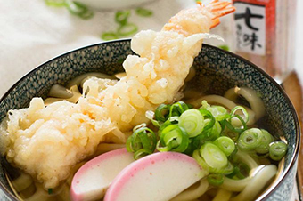
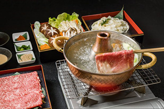

Sushi is a dish containing sushi rice, cooked, white rice, flavored with seasoned rice vinegar. There are various kinds of sushi dishes, such as nigirizushi (hand formed sushi), makizushi (rolled sushi), and chirashi (sushi rice topped with raw fish). Sushi is the most famous Japanese dish outside of Japan, and one of the most popular dishes inside Japan, as well.
Popular Dishes and Drinks
The Japanese cuisine offers a great variety of dishes and regional specialties. Some of the most popular Japanese dishes are listed below. They are categorized below into rice dishes, seafood dishes, noodle dishes, nabe dishes, meat dishes, soybean dishes, yoshoku dishes and other dishes. Please note that some dishes may fit into multiple categories, but are listed only once.
Rice Dishes
For over 2000 years, rice has been the most important food in Japanese cuisine. Despite changes in eating patterns over the last few decades and slowly decreasing rice consumption in recent years, rice remains one of the most important ingredients in Japan today.
Donburi
Donburi refers to a bowl of plain, cooked rice with some other food on top of it. Donburi are served at specialty restaurants, but they are also common at many other types of restaurants. Some of the most popular varieties are gyudon (stewed beef), katsudon (tonkatsu), tendon (tempura), oyakodon (chicken and egg), tekkadon (maguro) and kaisendon (raw seafood).
Rice Balls (Onigiri)
Rice balls (onigiri) are made of cooked rice and are typically wrapped in nori seaweed. They are usually lightly seasoned with salt and often contain a filling such as umeboshi (pickled Japanese plum), okaka (dried bonito shavings and konbu) or salmon. Rice balls are a popular and inexpensive, portable snack, homemade or available at convenience stores, but are also commonly served at general restaurants and izakaya.
Kare Raisu (Curry Rice)
Kare Raisu is cooked rice with a Japanese curry sauce. It can be served with additional toppings such as tonkatsu. Curry is not a native Japanese spice, but has been used in Japan for over a century. Kare Raisu is a very popular dish, and many inexpensive Kare Raisu restaurants can be found especially in and around train stations.
Fried Rice (Chahan)
Fried rice, or chahan, is a dish that was originally introduced from China. There are an infinite variety of ingredients that can be added to fried rice. Some common ones are peas, egg, green onions (negi), carrots and pork. Chahan is a suitable dish for using left over rice.
Chazuke (Ochazuke)
Chazuke, or ochazuke, is another simple comfort food consisting of tea or light fish stock poured over rice (sometimes made with leftover rice). Chazuke is often garnished with toppings such as umeboshi, grilled salmon or pickles. Chazuke is commonly served at izakaya and is a popular dish to eat after drinking.
Okayu
Kayu, or okayu, is Japanese rice porridge made by slow cooking rice in lots of water. It tends to be thicker than other types of rice porridge or gruel, and is a suitable dish for using left over rice. Kayu is often garnished with umeboshi and is commonly served to sick people because it is easily digestible.
Seafood Dishes
Hundreds of different fish, shellfish and other seafood from the oceans, seas, lakes and rivers are used in the Japanese cuisine. They are prepared and eaten in many different ways, such as raw, dried, boiled, grilled, deep fried or steamed.
Yakizakana
Yakizakana means grilled fish. Many varieties of fish are enjoyed in this way, including mackerel (saba), salmon (sake), mackerel pike (sanma), horse mackerel (aji), Okhotsk atka mackerel (hokke), sea bream (tai) and sweetfish (ayu).
Noodle Dishes
There are various traditional Japanese noodle dishes as well as some dishes which were introduced to Japan and subsequently Japanized. Noodle dishes are very popular in Japan and are served both hot and cold depending on the season. Noodle restaurants and food stands are ubiquitous, and it is common to find noodle stands along train platforms.

Udon
Udon are Japanese noodles made of wheat flour. Udon are thicker than soba and are also served either hot or cold and with various toppings such as fried tofu (kitsune udon), tempura (tempura udon) and mountain vegetables (sansai udon).
Somen
Like Udon noodles, somen are Japanese noodles made of wheat flour, but they are much thinner than udon and soba. Somen are usually eaten cold and are considered a summer speciality.
Yakisoba
Yakisoba are grilled or fried Chinese style noodles mixed with pieces of meat, cabbage, carrots or other vegetables, and garnished with red ginger. It is a popular festival food.
Nabe Dishes
Nabe, or hot pot dishes, are prepared in a hot pot, usually at the table. Typical ingredients are vegetables such as negi (Japanese leek) and hakusai (Chinese cabbage), various mushrooms, seafood and/or meat. There are many regional and personal varieties, and they are especially popular in the cold winter months. Some special nabe dishes are:
Oden
A nabe dish prepared with various fish cakes, daikon, boiled eggs, konyaku and kombu seaweed, slow simmered in a soy sauce based soup. Oden is a popular dish available at convenience stores in the winter.
Sukiyaki
A nabe dish prepared with thinly sliced meat, vegetables, mushrooms, tofu and shirataki (konyaku noodles) simmered in a sweet soy sauce broth. The pieces of food are dipped into raw beaten egg before being eaten.

Shabu Shabu
Shabu shabu is a Japanese style hot pot in which pieces of thinly sliced meat, seafood, vegetables, mushrooms and tofu are cooked by dipping them into a hot soup. The bite-sized pieces are then dipped into a ponzu citrus or sesame sauce before being eaten.
Chanko Nabe
Chanko nabe is the traditional staple diet of sumo wrestlers. There are many varieties of chanko nabe, which can be tried at one of the several specialty chanko nabe restaurants found around Ryogoku, the sumo district in Tokyo.
Meat Dishes
Hundreds of different fish, shellfish and other seafood from the oceans, seas, lakes and rivers are used in the Japanese cuisine. They are prepared and eaten in many different ways, such as raw, dried, boiled, grilled, deep fried or steamed.
Donburi
Donburi refers to a bowl of plain, cooked rice with some other food on top of it. Donburi are served at specialty restaurants, but they are also common at many other types of restaurants. Some of the most popular varieties are gyudon (stewed beef), katsudon (tonkatsu), tendon (tempura), oyakodon (chicken and egg), tekkadon (maguro) and kaisendon (raw seafood).
Soybean Dishes
Hundreds of different fish, shellfish and other seafood from the oceans, seas, lakes and rivers are used in the Japanese cuisine. They are prepared and eaten in many different ways, such as raw, dried, boiled, grilled, deep fried or steamed.
Donburi
Donburi refers to a bowl of plain, cooked rice with some other food on top of it. Donburi are served at specialty restaurants, but they are also common at many other types of restaurants. Some of the most popular varieties are gyudon (stewed beef), katsudon (tonkatsu), tendon (tempura), oyakodon (chicken and egg), tekkadon (maguro) and kaisendon (raw seafood).
Yoshoku Dishes
Hundreds of different fish, shellfish and other seafood from the oceans, seas, lakes and rivers are used in the Japanese cuisine. They are prepared and eaten in many different ways, such as raw, dried, boiled, grilled, deep fried or steamed.
Donburi
Donburi refers to a bowl of plain, cooked rice with some other food on top of it. Donburi are served at specialty restaurants, but they are also common at many other types of restaurants. Some of the most popular varieties are gyudon (stewed beef), katsudon (tonkatsu), tendon (tempura), oyakodon (chicken and egg), tekkadon (maguro) and kaisendon (raw seafood).
Other Dishes
Hundreds of different fish, shellfish and other seafood from the oceans, seas, lakes and rivers are used in the Japanese cuisine. They are prepared and eaten in many different ways, such as raw, dried, boiled, grilled, deep fried or steamed.
Donburi
Donburi refers to a bowl of plain, cooked rice with some other food on top of it. Donburi are served at specialty restaurants, but they are also common at many other types of restaurants. Some of the most popular varieties are gyudon (stewed beef), katsudon (tonkatsu), tendon (tempura), oyakodon (chicken and egg), tekkadon (maguro) and kaisendon (raw seafood).